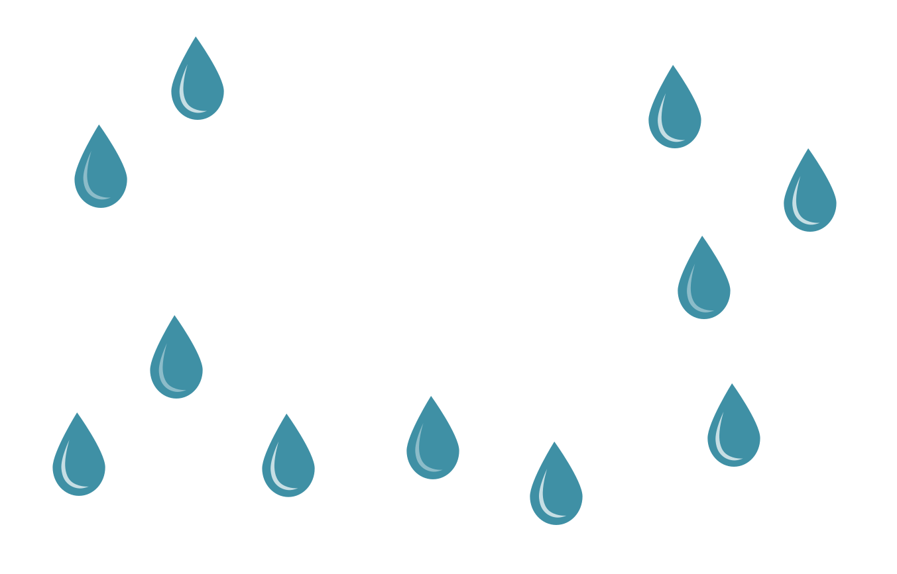

By now, most of us are familiar with the usual water-saving tips
...don't leave water running unnecessarily, time your showers, install low-flow shower heads and resist the urge to unnecessarily water the lawn or wash the car.
But what about all of the water "hidden" in just about every product we buy?
Hidden or virtual water is a relatively new term, which explores the concept of the water needed to grow/feed, manufacture, and process the products we buy, as well as water used in industry in general.
By being mindful of your virtual water use, you can greatly reduce the total amount of water you use.
As with your carbon footprint, the first step toward reduction is finding out how much water you are using
And If your footprint is high, you are in line with the national trend-- the United States uses almost twice as much water as the UK.
but there is plenty you can easily do to develop a new approach to how you use one of our most precious commodities.
Everyday products like cotton and paper have a significant water footprint. It takes about 2.5 gallons of water to produce one sheet of paper and about 713 gallons for a single cotton shirt.

So when shopping, try to buy products only when necessary and look for those that have gone through the least processing in order to create the finished product.
Recycling is one way to save water, because the extraction and manufacturing of virgin raw materials into single-use packaging uses quite a bit of water.
Recycling reduces the need for materials from virgin sources and therefore reduces water use. Here are some commonly-used products that are definitely worth recycling.
Food growth and production consumes a lot of water. And besides the fact that wasting food is wasting your money, it also a huge waste of water.
One cup of coffee has a water footprint of approximately 37 gallons, and coffee accounts for about 2 percent of the total water used in crop production.
Depending on your addiction levels, you could save more than 100 gallons of water if you brewed and consumed only the exact amount of coffee you actually drink.
If you do find that you have food waste, compost it and create nutrient-rich soil, which you can use to grow your own food that won't need to be processed and packaged-- both of which require water.
The incredible amount of water embedded in products we use should motivate us to waste as little as possible and be mindful about the amount of water in everything we buy.